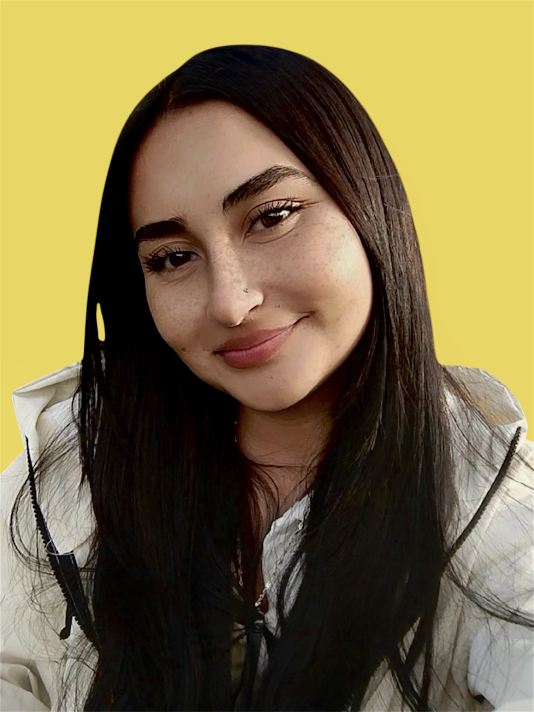
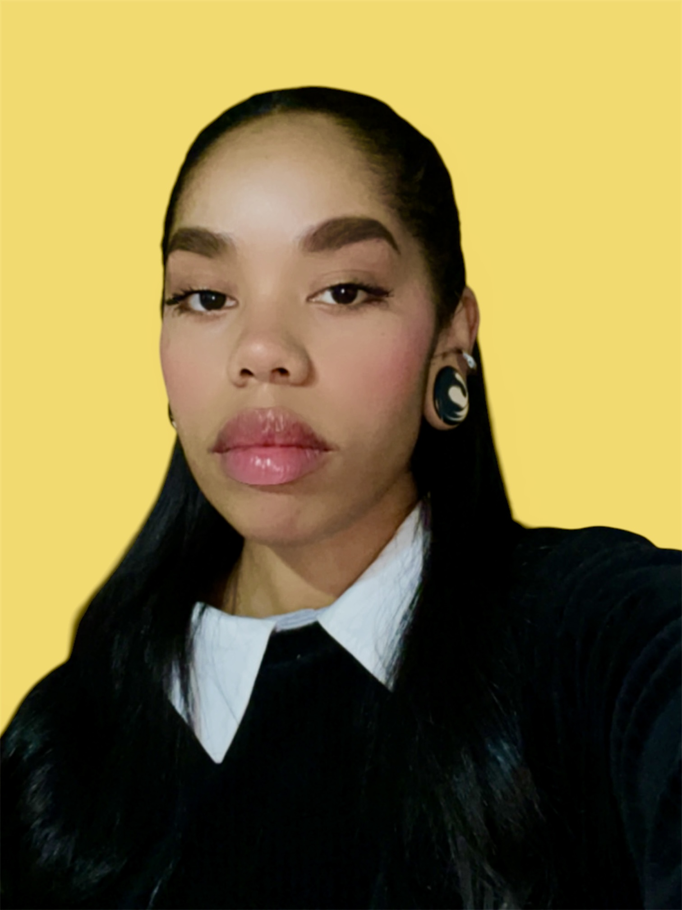

El equipo está conformado por cuatro integrantes, cada una aportando desde sus conocimientos y competencias específicas.
Diseñadora gráfica
Edición de fotografía
Diseño editorial

Diseñadora gráfica
Ilustración
Diseño web

Diseñadora gráfica
Ilustración
Publicidad
Diseñadora gráfica
Diseño de packaging
Diseño editorial
El presente proyecto tiene como propósito rendir homenaje a la comunidad afro-palenquera mediante una remembranza de sus tradiciones, su cultura y su historia. A partir de un enfoque de investigación-creación, se desarrollará un poemario ilustrado que integrará collages, ilustraciones y composiciones poéticas con el fin de visibilizar y valorar la herencia cultural de esta comunidad.
Cada página del poemario será concebida, diseñada e intervenida por las integrantes del grupo, quienes aplicarán sus conocimientos disciplinares y competencias en diseño para construir una pieza editorial que articule recursos visuales y literarios. Este proceso creativo busca no solo exaltar la memoria colectiva afro-palenquera, sino también reconocer la importancia de sus prácticas culturales dentro del panorama sociocultural colombiano.
Diseñar y desarrollar un poemario ilustrado que, a través de recursos gráficos y narrativos como el collage, la ilustración, la poesía, la composición editorial y una plataforma web, permita comunicar y exaltar la riqueza cultural de la comunidad afrodescendiente de San Basilio de Palenque.
Proponemos una alternativa innovadora que no solo informa, sino que conecta emocionalmente con el espectador, contribuyendo a la visibilización y valoración de la cultura afro-palenquera a través de dos componentes principales:
Integra recursos gráficos y narrativos para comunicar de manera sensible y estética la cultura de la comunidad. A través de collage, ilustración, poesía y composición editorial, busca traducir elementos como sus creencias, cotidianidad, historia y tradiciones en una experiencia visual única.
Complementa el libro físico y amplía drásticamente el alcance del proyecto. Permite la difusión digital y la creación de un espacio interactivo, garantizando que el contenido permanezca accesible y atractivo para diferentes públicos en la red.
Nuestro producto principal es un poemario ilustrado inspirado en nuestra experiencia con la comunidad afro-palenquera y nuestro paso por esta.
Pañoletas, Postales y Stickers ilustrados a base de fotografías tomadas en San Basilio de Palenque por nosotras mismas.
Nuestro público objetivo está compuesto por estudiantes y personas interesadas en la cultura, la tradición oral, el arte, la identidad y la historia nacional, con edades entre los 15 y 35 años.
Este grupo se caracteriza por consumir contenidos visuales y narrativos, así como por mostrar interés en propuestas culturales que integren lo artístico y lo educativo. Por ello, el proyecto se adapta a sus intereses mediante un formato que combina ilustración, poesía y recursos digitales.
SiguienteNuestra estrategia se divide en tres pilares fundamentales para garantizar el impacto y alcance del proyecto:
Esta es una muestra de los avances que hemos tenido para el proyecto.
Muestra de ilustraciones desarrolladas para el proyecto.
Composiciones fotográficas en collages.
Diseño y prototipos de empaques.
Esperamos que hayas disfrutado la presentación sobre las raíces de Palenque.